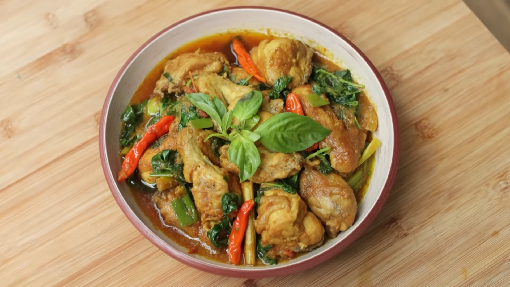

A vibrant, fiery stir-fry that is a favorite in Indonesian households. Tender pieces of chicken are simmered in a rich paste of red chilies, shallots, and turmeric, then finished with a generous handful of fresh Kemangi (lemon basil). The result is a perfect balance of bold heat and refreshing citrusy notes.